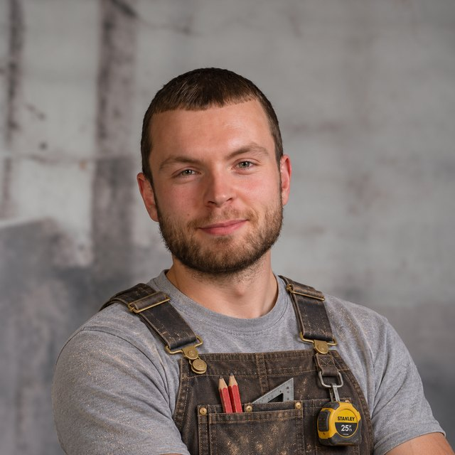

Airco
Koelen in de zomer, zuinig bijverwarmen in de winter. Binnen- en buitenunit, netjes weggewerkte leidingen.
Onderhoud, installatie en maatwerk in Amsterdam. U heeft één vast aanspreekpunt, van de eerste vraag tot de oplevering.
Geplaatst door gecertificeerde monteurs.
Naar de productenIk lever het product en regel de installatie. U krijgt advies over wat bij uw woning past, geen standaardpakket.
Koelen in de zomer, zuinig bijverwarmen in de winter. Binnen- en buitenunit, netjes weggewerkte leidingen.
Een nieuwe ketel die past bij de woning en het warmwatergebruik, inclusief het afvoeren van de oude.
Panelen, omvormer en accu als één set, aangesloten op de meterkast. Reken hieronder uit wat uw dak opbrengt.
Een indicatie voor Amsterdam, met panelen van 430 Wp. Na een bezoek reken ik het precies uit voor uw dak.
Een selectie van werk in scholen, horeca en woningen.
Ik ben Raymon Keereweer. Sinds 2020 doe ik onderhoud, installaties en maatwerk in Amsterdam, vooral voor scholen, bedrijven en particulieren. Ik kom kijken, denk mee en voer het werk uit. Voor grotere klussen werk ik met een vast team van ervaren vakmensen.
Werktuigbouwkundig ingenieur, TU Delft.
Neem contact op
Stuur een bericht via WhatsApp of het formulier. Een foto van de situatie helpt.
Hier laat ik zien waar ik plezier in heb: 3D-ontwerpen, berekeningen en simulaties. Klik op een model om het ontwerp te openen.
Niet alleen balken: ik reken aan echte geometrie, met spanning, warmte en stroming. Twee voorbeelden die u hier zelf kunt bedienen.
Een plaat met een gat onder trek. Beweeg over de plaat om de lokale Von Mises-spanning te lezen.
Analytische oplossing van Kirsch voor een brede plaat (Kt = 3). Bij echte producten reken ik dit met FEM op de werkelijke geometrie.
Pijpenbundelwarmtewisselaar: heet water door de mantel, koud water in tegenstroom door de pijpen. De stroomlijnen kleuren mee met de temperatuur.
Vereenvoudigd model: ε-NTU in tegenstroom, warmteoverdracht aan mantelzijde volgens h ∝ v0,55 (Kern). Drukval is een schatting. Volledige stroming en warmte reken ik in COMSOL.
Een stalen trapboom op twee steunpunten. Bij het ontwerpen houd ik de eerste eigenfrequentie ruim boven de loopfrequentie, anders gaat de trap meetrillen.
Euler-Bernoulli-balk, staal, met 40 kg/m voor treden. Demping 2%. Lopen geeft krachten rond 1,6–2,4 Hz en een tweede harmonische tot ongeveer 4,8 Hz.
Een multibody-model van een swingarm. Stel veer en demper in en kijk hoe de veerweg van het wiel verandert.
| Onderdeel | Aantal |
|---|
Het 3D-model is een vereenvoudigde weergave van het ontwerp.